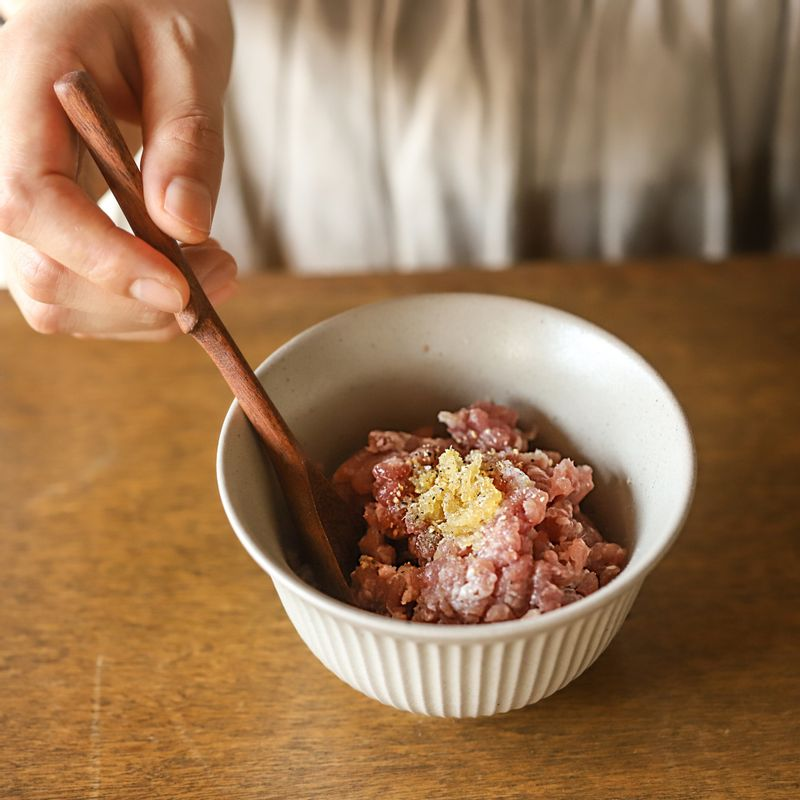
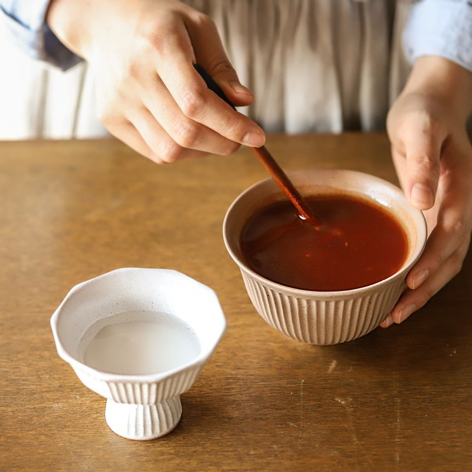
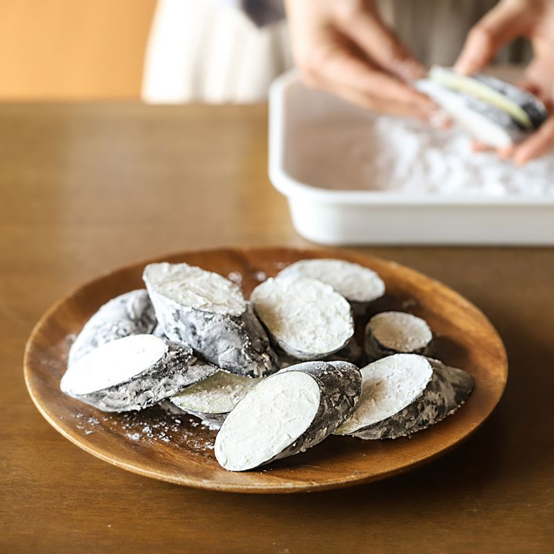
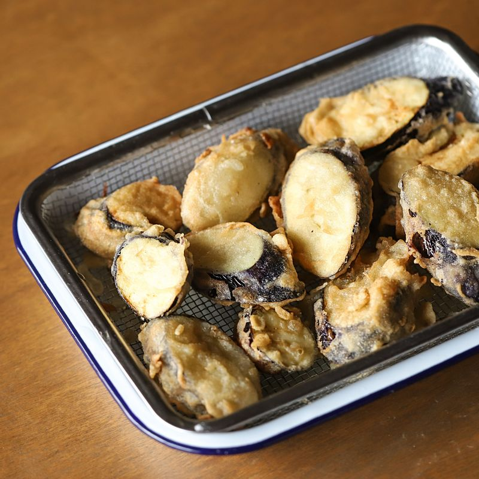
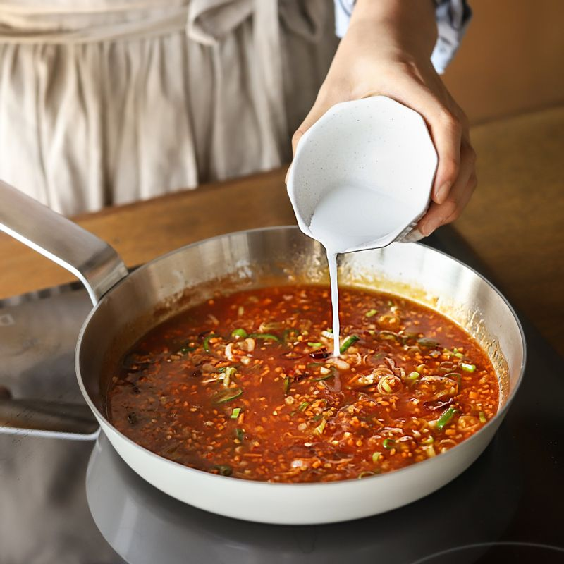

-

돼지고기는 밑간 재료에 10분 정도 재워주세요. 가지는 어슷하게 2센치 두께로 썰고 가운데 어슷하게 칼집을 넣고 약간의 소금을 뿌려 밑간을 해주세요.
청양고추와 대파는 송송썰고 당근과 건고추, 마늘은 잘게 잘라주세요.
-

볼에 소스 재료를 넣어 섞어주세요. 전분물 재료를 섞어 전분물을 만들어주세요.
-

가지의 겉부분과 칼집 사이에 전분가루를 뿌리고 칼집 사이에 밑간한 돼지고기를 넣어주세요.
-

볼에 튀김 반죽 재료를 넣어 섞고 가지에 전분가루-튀김반죽 순으로 묻혀 170도로 달군 기름에 튀긴 후 센불에서 한번 더 바삭하게 튀겨주세요.
-

냄비에 약간의 기름을 두르고 잘게 썰은 마늘과 대파, 건고추를 넣어 볶다가 당근과 청양고추를 넣어 함께 볶고 소스 재료를 넣어 한소끔 끓인 후 녹말물을 넣어 걸쭉해지면 불을 꺼주세요.
-
접시에 튀긴 가지를 담고 소스를 얹어주세요.